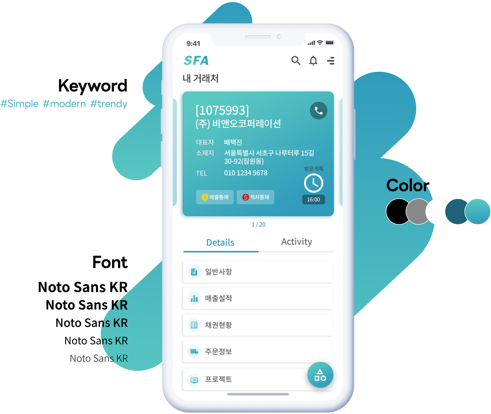
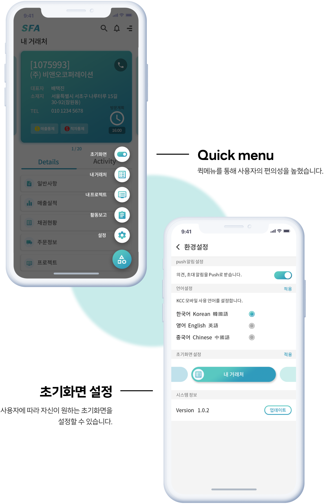
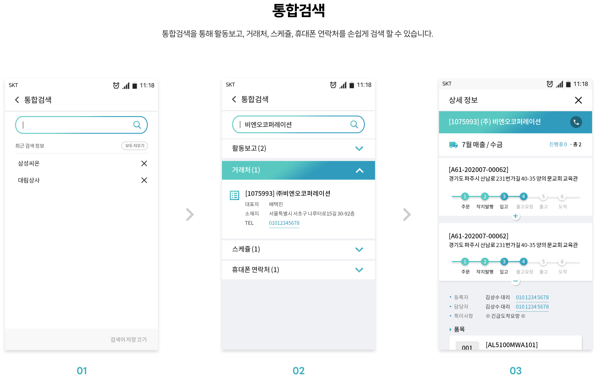
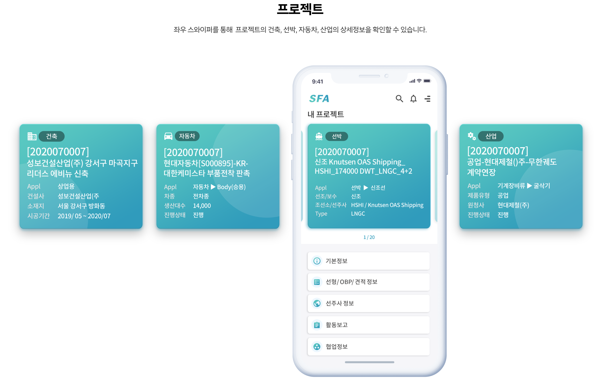
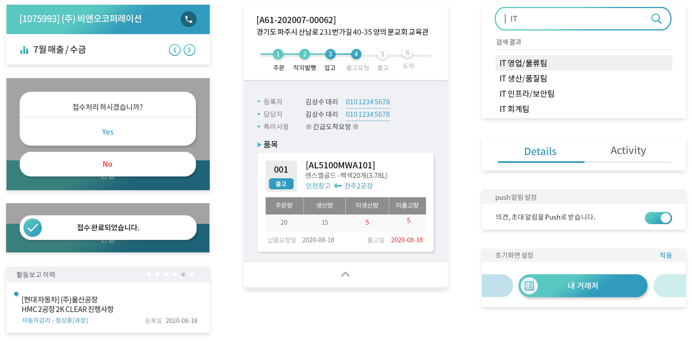

Goal
기존 PC에서 활용하던 SFA 시스템을 영업사원이 외부에서 사용하는 용도로 개편하고
모바일의 제약 사항과 특화 기능을 파악하여
최적화된 시스템 개발을 목표로 합니다.
Solutions
-
01.
통합검색을 통해 손쉽게 활동보고, 거래처,
협업정보, 스케쥴, 연락처 검색이
가능하도록 구현 -
02.
한눈에 볼 수 있는 내 거래처와
프로젝트의 상세정보 -
03.
퀵메뉴를 통해 사용도가 높은
메뉴 이동이 가능하도록 구현
Style guide
카드형식으로 심플하게 디자인하여 시각적으로 깔끔하면서도 눈에 띄도록 디자인 하였습니다.
User flow
니즈파악 후 사용자 편의에 맞게 제작하였습니다. 심플하고 깔끔한 디자인으로 사용자의 효율성을 극대화 합니다.
 
UI Style

OUTPUT